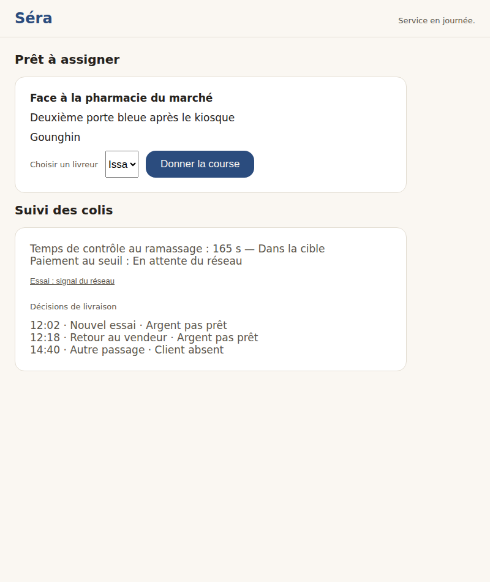
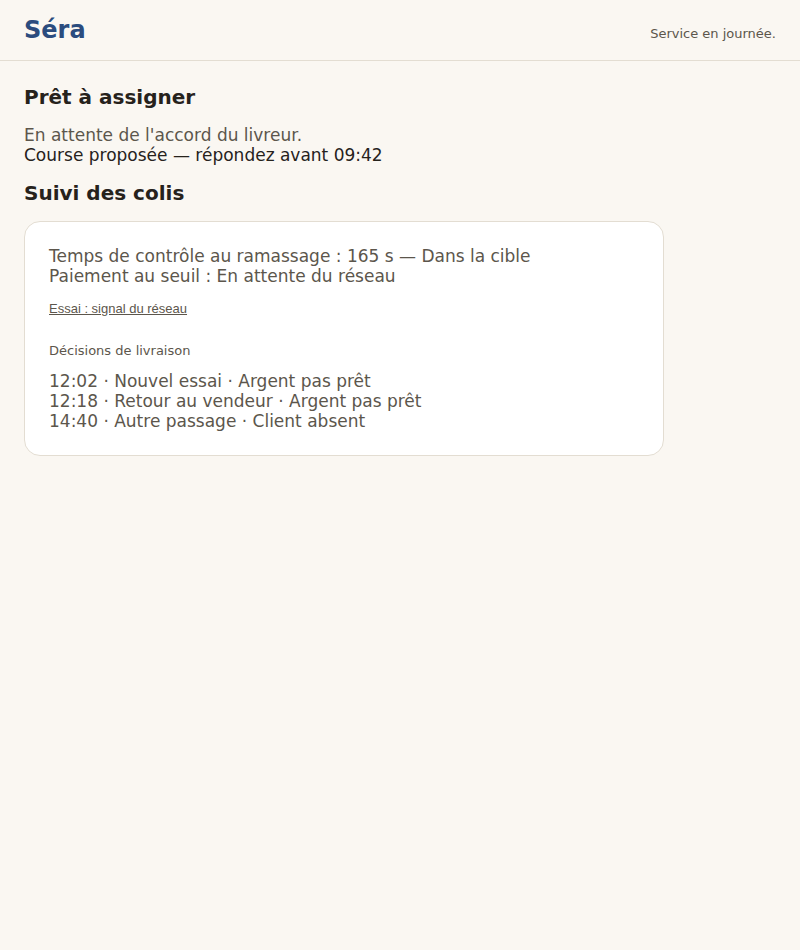
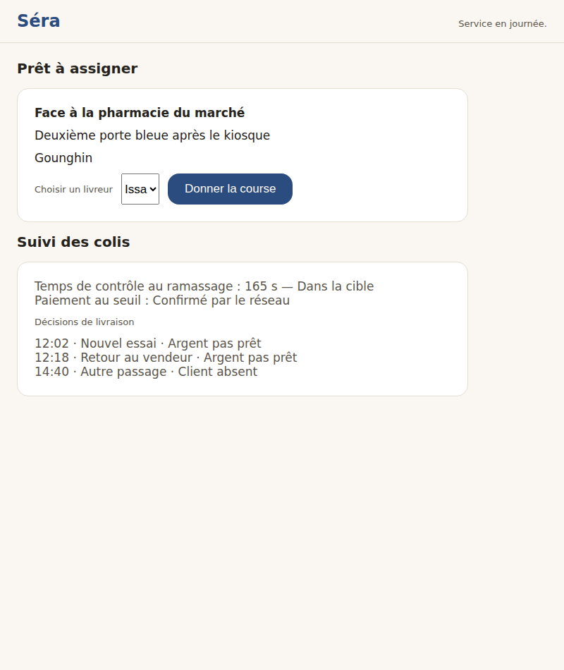
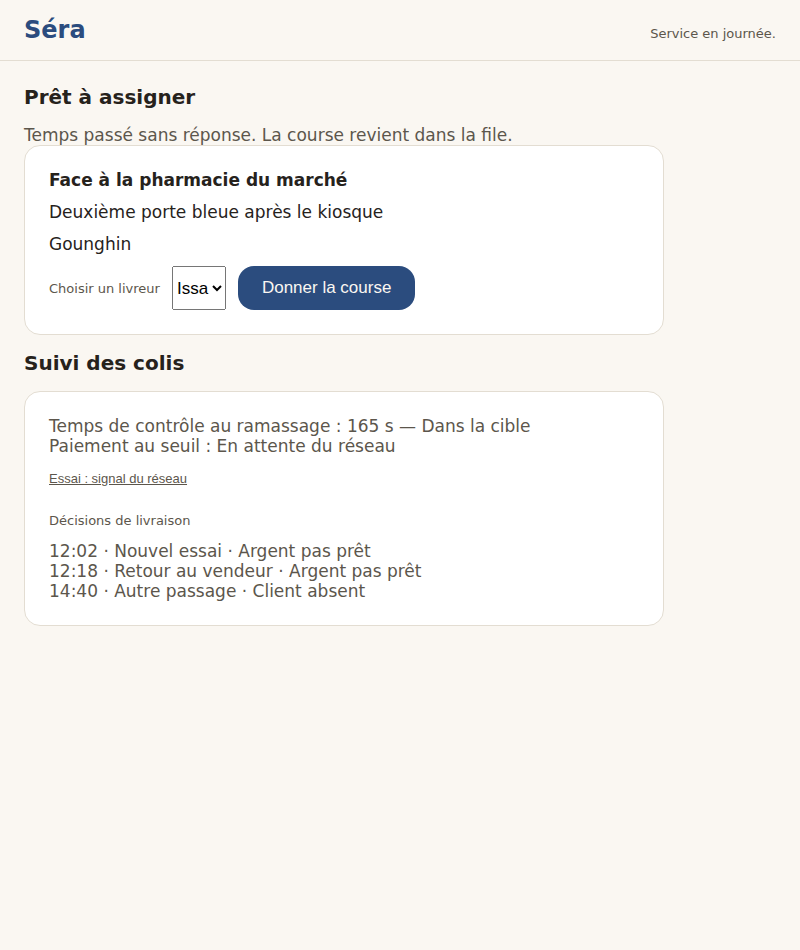

Séra — console de dispatch (Grand Teint) — galerie d'aperçu
Chaque image est un état RÉELLEMENT construit, capturé automatiquement (bac à sable — aucune donnée réelle).
File « Prêt à assigner » et suivi

La file prête sur Grand Teint (repère d'abord : lieu, indications, zone) + le suivi — temps de contrôle (D20), paiement au seuil EN ATTENTE du réseau, chronologie des issues

Course donnée — l'état d'attente honnête (l'accord du livreur n'est jamais supposé) + le levier « Marquer la course remise »Course remise — le levier « done » (ruling ⑤) libère le bail via releaseOnCompletion : « Course remise. Le bail est libéré. »

Paiement au seuil CONFIRMÉ par le réseau — la ligne ne s'affiche qu'après le vrai signal (chemin « Essai » du bac à sable)

Course remise dans la file — le livreur n'a pas accepté à temps (5 min) : l'état est dit, la carte revient
États nommés sans écran (les manques, jamais silencieux)
File vide (console.empty_state) — Copie construite (« Aucune course à assigner pour le moment. ») mais inatteignable dans le monde bac à sable : la file initiale porte toujours une course et l'après-assignation affiche la ligne d'attente. Nommé plutôt que passé sous silence.
Parcours livreur (app RN, WO-6.1 « le visage ») — les 17 écrans du spine sur le kit Grand Teint (v0.9.0), la LandmarkCard illustrée (R4), la célébration « course validée » (R11), le SOS de partout (R14) — Ces écrans vivent dans l'app livreur (React Native, aperçu Expo Go) et portent depuis WO-6.1 la couche Grand Teint. Cette galerie Playwright ne capture QUE la console (web) ; le canal visuel avant/après du parcours livreur est WALKTHROUGH.md + l'aperçu Expo Go sur le téléphone du fondateur. Nommés ici plutôt que passés sous silence.